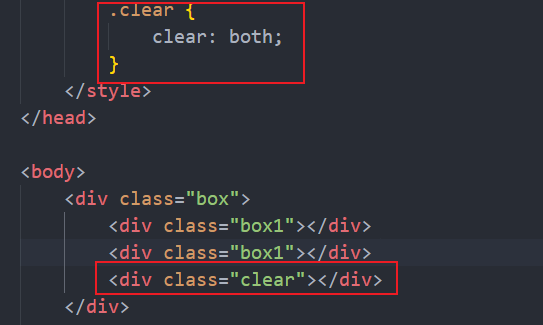
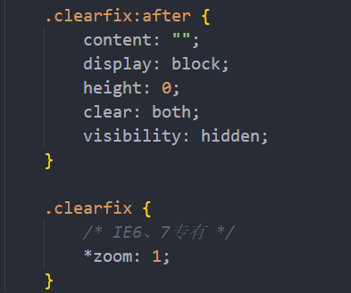
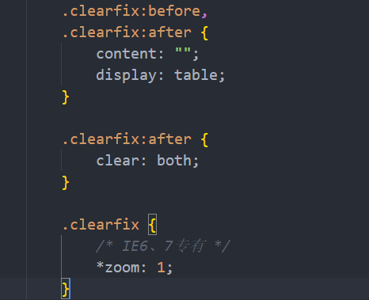
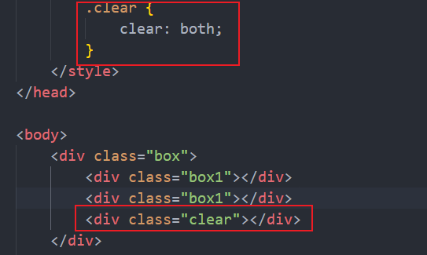

CSS三大特性
-
1.层叠性
相同选择器给设置相同的样式，此时一个样式就会覆盖(层叠)另一个冲突的样式。层叠性主要解决样式冲突
-
2.继承性
子标签会继承父标签的某些样式，降低CSS样式的复杂性，可以简化代码
text-, font-, line-这些元素开头的可以继承，以及color属性
-
3.优先级
当同一个元素指定多个选择器，就会有优先级的产生
选择器 选择器权重 继承或者* 0,0,0,0 元素选择器 0,0,0,1 类选择器，伪类选择器 0,0,1,0 ID选择器 0,1,0,0 行内样式style="" 1,0,0,0 !important 重要的 ∞无穷大 权重叠加：如果是复合选择器，则会有权重叠加，需要计算权重
注意：权重虽然会叠加，但不会发生进位
盒子模型
页面布局要学习三大核心，盒子模型、浮动和定位，学习好盒子模型能非常好的帮助我们布局页面
所谓盒子模型:就是把HTML页面中的布局元素看作是一个矩形的盒子，也就是一个盛装内容的容器。
CSS盒子模型本质上是一个盒子，封装周围的HTML元素，它包括:边框、外边距、内边距和实际内容
-
border 边框
border: border-width border-style border-color
例如：border: 1px solid black;
属性 作用 border-width 定义边框粗细，单位px border-style 边框的样式 border-color 边框的颜色 - content 内容
-
padding 内边距
padding属性用于设置内边距，及边框与内容之间的距离
值的个数 表达意思 padding:5px; 1个值，代表上下左右都有5像素内边距 padding:5px 10px; 2个值，代表上下内边距是5像素 左右内边距是10像素 padding:5px 10px 20px; 3个值，代表上内边距5像素，左右内边距10像素，下内边距20像素 padding:5px 10px 20px 30px; 4个值，上是5像素，右是10像素，下是20像素，左是30像素，顺时针 注意：padding属性会影响盒子的实际大小
-
margin 外边距
margin属性用于设置外边距，即控制盒子和盒子之间的距离
外边距可以让块级盒子水平居中，但必须满足两个条件：
- 盒子必须指定了宽度width
- 盒子左右的外边距都设置为auto
外边距合并
使用margin定义块元素的垂直外边距时，可能会出现外边距的合并
对于两个嵌套关系的块元素，父元素有上外边距，同时子元素也有上外边距，此时父元素会塌陷较大的外边距值
解决方案：- 可以为父元素定义上边框
- 可以为父元素定义上内边距
- 可以为父元素添加overflow:hidden
圆角边框
border-radius属性用于设置元素的外边框圆角
语法：border-radius: length;
该属性是一个简写属性，可以跟四个值，分别代表左上角、右上角、右下角、左下角
盒子阴影
box-shadow属性为盒子添加阴影
语法：box-shadow: h-shadow v-shadow blur spread color inset;
| 值 | 描述 |
|---|---|
| h-shadow | 必需。水平阴影的位置。允许负值。 |
| v-shadow | 必需。垂直阴影的位置。允许负值。 |
| blur | 可选。模糊距离。 |
| spread | 可选。阴影的尺寸。 |
| color | 可选。阴影的颜色。请参阅CSS颜色值。 |
| inset | 可选。将外部阴影(outset)改为内部阴影。 |
注意：默认的是外阴影(outset),但是不可以写这个单词，否则导致阴影无效
文字阴影
text-shadow属性将阴影应用于文本
语法：text-shadow: h-shadow v-shadow blur color;
| 值 | 描述 |
|---|---|
| h-shadow | 必需。水平阴影的位置。允许负值。 |
| v-shadow | 必需。垂直阴影的位置。允许负值。 |
| blur | 可选。模糊距离。 |
| color | 可选。阴影的颜色。请参阅CSS颜色值。 |
浮动
有很多的布局效果，标准流没有办法完成，此时就可以利用浮动完成布局。因为浮动可以改变元素标签默认的排列方式。
浮动最典型的应用：可以让多个块级元素一行内排列显示。
网页布局第一准则：多个块级元素纵向排列找标准流，多个块级元素横向排列找浮动。
-
1. 什么是浮动
float属性用于创建浮动框，将其移动到一边，指导左边缘或右边缘触及包含块或另一个浮动框的边缘
属性值 描述 none 元素不浮动(默认值) left 元素向左浮动 right 元素向右浮动 -
2. 浮动特性
-
① 浮动元素会脱离标准流(脱标)
- a. 脱离标准普通流的控制(浮)移动到指定位置(动),(俗称脱标)
- b. 浮动的盒子不再保留原先的位置
- ② 浮动的元素会一行内显示并且元素顶部对齐
- ③ 浮动的元素会具有行内块元素的性质
任何元素都可以浮动，不管原先是什么模式的元素，添加浮动之后具有行内块元素相似的特性
- a. 如果块级盒子没有设置宽度，默认宽度和父级一样宽，但是添加浮动后，它的大小根据内容来决定
- b. 浮动的盒子中间是没有缝隙的，是紧挨着一起的
- c. 行内元素同理
-
① 浮动元素会脱离标准流(脱标)
- 3. 浮动元素经常和标准流父级搭配使用
先用标准流的父元素排列上下位置，之后内部子元素采取浮动排列左右位置，符合网页布局第一准则
- 4. 浮动布局注意点
- 先用标准流的父元素排列上下位置，之后内部子元素采取浮动排列左右位置
- 一个盒子里面有多个子盒子，如果其中一个盒子浮动了，那么其他兄弟也应该浮动，以防引起问题
浮动的盒子只会影响浮动盒子后面的标准流，不会影响前面的标准流
清除浮动
- 1. 为什么需要清除浮动？ 由于父级盒子很多情况下，不方便给高度，但是子盒子浮动又不占有位置，最后父级盒子高度为0时，就会影响下面的标准流盒子
- 2. 清除浮动的本质
- a. 清除浮动的本质就是清除浮动元素造成的影响
- b. 如果父盒子本身有高度，则不需要清除浮动
- c. 清除浮动之后，父级就会根据浮动的子盒子自动检测高度。父级有了高度，就不会影响下面的标准流了
- 3. 清除浮动
语法：选择器{clear:属性值;}
属性值 描述 left 不允许左侧有浮动元素(清除左侧浮动的影响) right 不允许右侧有浮动元素(清除右侧浮动的影响) both 同时清除左右两侧浮动的影响 清除浮动的策略：闭合浮动
- 4. 清除浮动的方法
- a. 额外标签法也称为隔墙法，是W3C推荐的做法

注意：要求这个新的空标签必须是块级元素
- b. 父级添加overflow属性
可以给父级元素添加overflow属性，将其属性值设置为hidden、auto、或scroll
- c. 父级添加after伪元素 
- d. 父级添加双伪元素 
- a. 额外标签法也称为隔墙法，是W3C推荐的做法

CSS属性书写顺序
建议遵循以下顺序
- 1. 布局定位属性：display/position/float/clear/visibility/overflow(建议display第一个写，毕竟关系到模式)
- 2. 自身属性：width/height/margin/padding/border/background
- 3. 文本属性：color/font/text-decoration/text-align/vertical-align/white-space/break-word
- 4. 其他属性(CSS3)：content/cursor/border-radius/box-shadow/text-shadow/background:linear-gradient